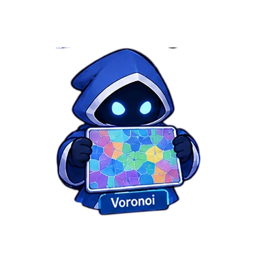

Диаграмма Вороного
Разбиение плоскости на области по ближайшей точке: строим по шагам, сглаживаем и проверяем в песочнице.

Разбиение плоскости на области по ближайшей точке: строим по шагам, сглаживаем и проверяем в песочнице.